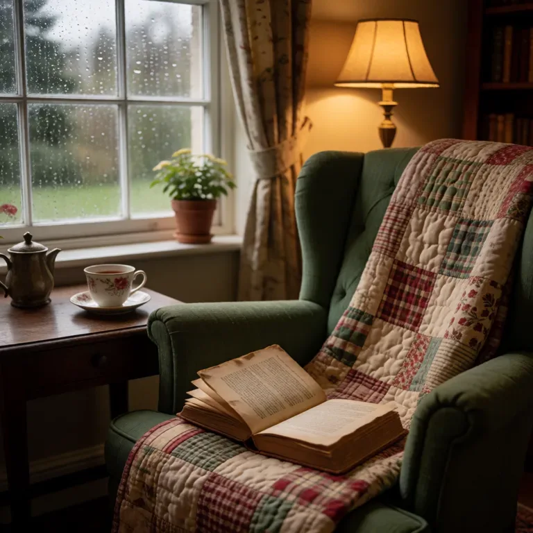
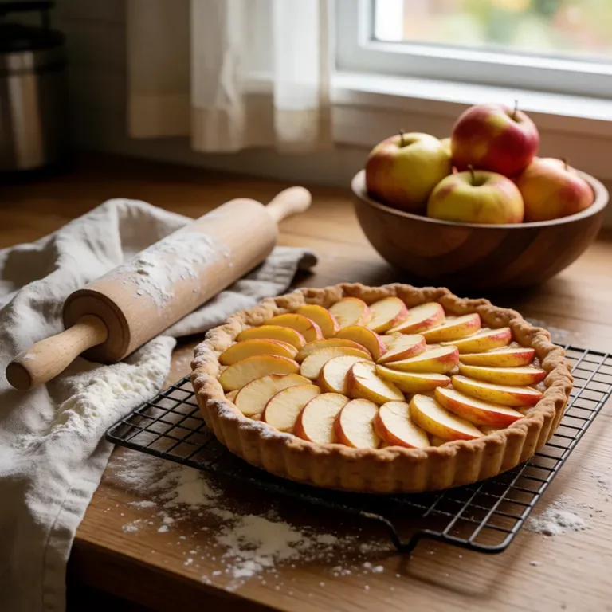
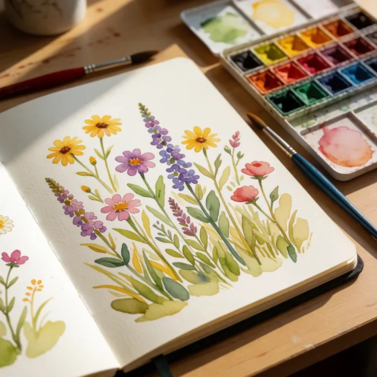
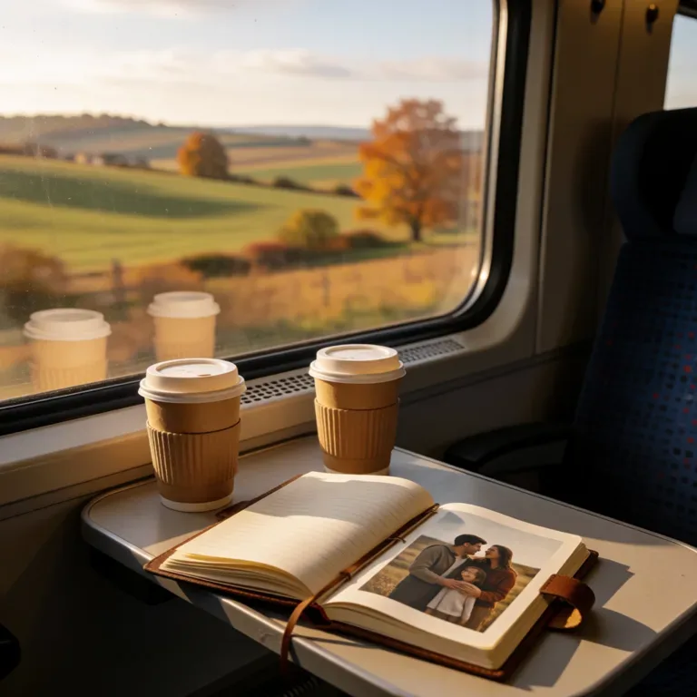
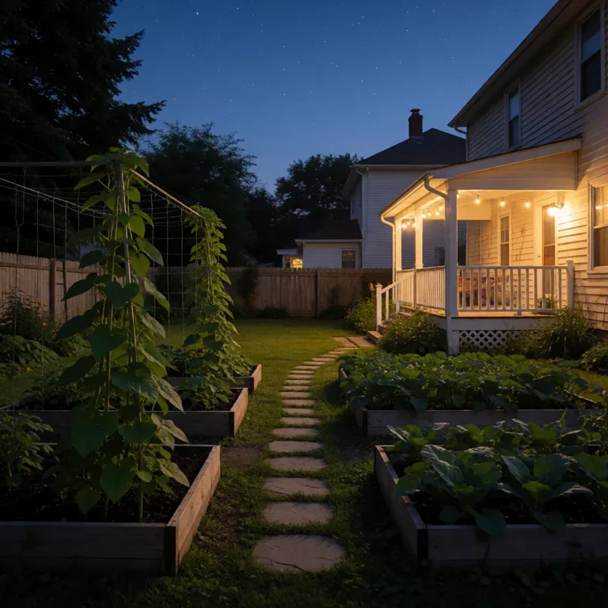

A lived-in family kitchen in warm morning light, sourdough bread on a wooden board, yellow ceramic mug, herbs at the window. Candid editorial photograph, tasteful natural colors, no text.
Everything made through your gateway.














The tomatoes are ready to pick. Please water the herb pots before dinner.
Our solar house uses sunlight to power a tiny fan. We tested it on a cloudy day too.
On Saturday we will take the train to the coast, walk by the harbor, and have a picnic.
Hi June. Welcome to our household gateway. You can try a voice message or make a picture of your garden.
For the apple tart, slice the apples thinly and bake until the pastry is golden. Let it cool before serving.
 Video · 0:03
Video · 0:03